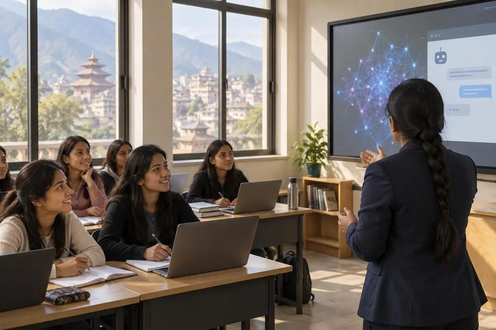
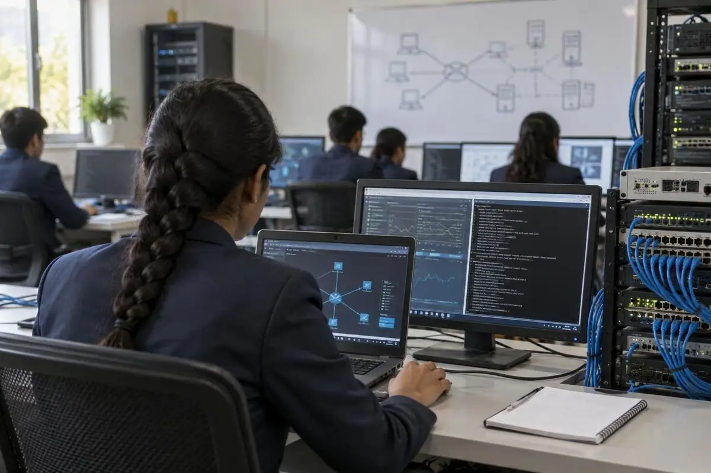
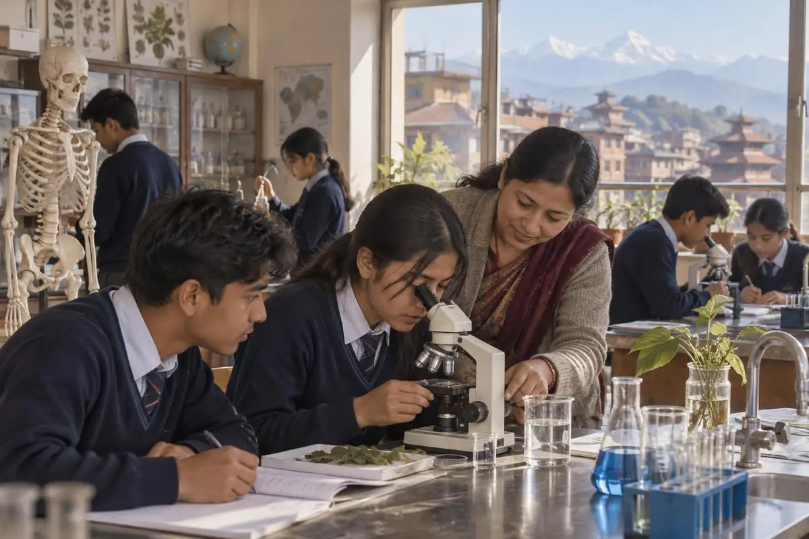
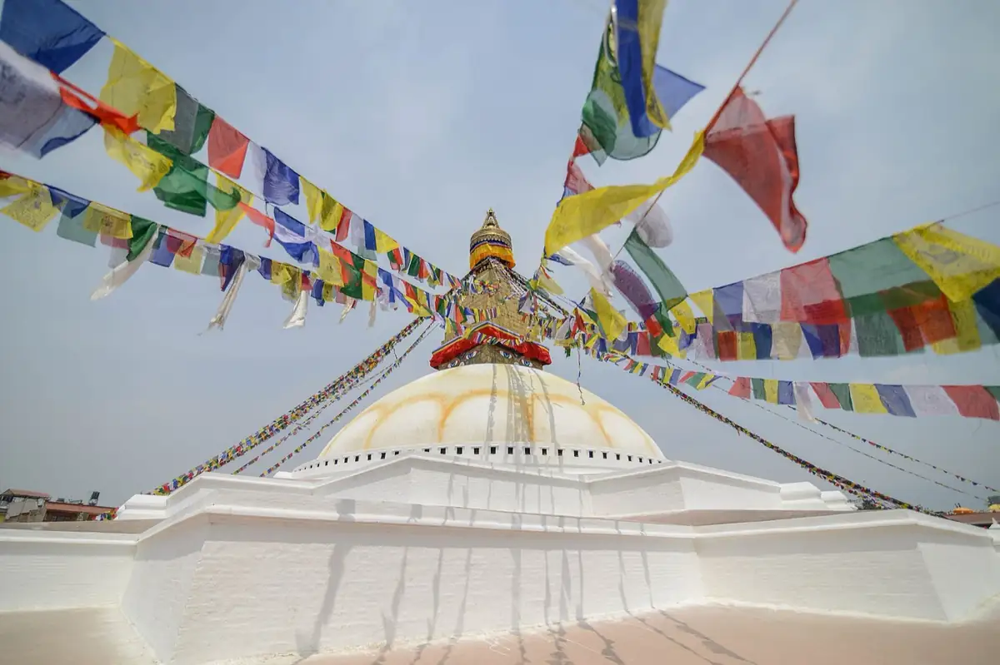

AI is changing the world. You need somebody who has already led that change.
Most students use AI to get through college. Puspa uses it to change lives. A second-year student, she has already trained over 3,000 women in the U-GO Scholar Program. Get somebody who has done it before, and give your people the skills to unlock everything AI can do.
“Puspa Shukla is one of the core reasons why the U-GO AI program has expanded on a global basis and has reached thousands of women scholars in nine different countries. She is a force of nature and a phenomenal person to have on your team.”
Stuart KerrGlobal Director, U-GO AI · U-GO University
Puspa, in her own words · 1 min 39 s · captions on screen
In her own words
“U-GO believed in mine, and that belief gave me the chance to continue my education, dream bigger and become someone who can give back.”
In this message Puspa speaks about the Nepal Future Fund, which U-GO created to protect the education and secure the future of young people in Nepal, after the devastating flash floods.
Retain
Expand
Secure
“You may see a contribution, but we see a future.”
Namaste from Nepal. I am Puspa Shukla, a U-GO scholar from Nepal, currently pursuing my bachelor's in computer application in my second year, and I know well what it means when someone believes in your future. U-GO believed in mine, and that belief gave me the chance to continue my education, dream bigger and become someone who can give back.
Today, Nepal is going through a very painful situation. I am safe with my family members, but there are so many families who are still suffering due to the devastating flash flood in Nepal, and I know there are so many young people like me who are afraid that they may have to stop their education and dreams. That is why I am standing here today. U-GO, who once believed in my future, is now believing in the future of Nepal.
U-GO has created the Nepal Future Fund to protect the education and secure the future of young people of Nepal, with three main pillars: retain, expand and secure. Three commitments with one common goal: to protect the future of Nepal. So please join us. Go to the website ugouniversity.org and join us to protect the future of Nepal. Thanks to everyone supporting the Nepal Future Fund. Remember, you may see a contribution, but we see a future. Thank you.
Automatic transcript, lightly edited for spelling.
Why Puspa
You don't just want somebody who knows AI. You want somebody who can teach your organization how to move forward with it.
Knowing AI is a skill. Teaching it is a multiplier. Puspa has done both: she learned it, then trained over 3,000 women in the U-GO Scholar Program until each of them could make AI work for her own life and work.
She learns it.
She teaches it.
Your people carry it on.
She is a second-year student. She has already done this at scale. Imagine her on your team.
AI-generated illustration
She has done it
Plans it. Builds it. Teaches it. Leads it.
She plans it.From a sketch on the whiteboard to a working site: a currency converter, two games and a route planner, all built in HTML, CSS and JavaScript.AI-generated illustration

She teaches it.Guides students through AI fundamentals, then lets them work out how to make it work for them. Over 3,000 women trained in the U-GO Scholar Program.AI-generated illustrationShe leads it.Ambassador of U-GO Nepal, representing Nepali scholars globally, and a leader of the U-GO Nepal scholars. Hosted programs and engaged international participants at the U-GO Summit 2025.AI-generated illustration

She trains for it.System & Network Support Specialist, from the TechSkills IT Scholarship Program: Windows Server, Active Directory, Microsoft 365, networking, Hyper-V and VMware.AI-generated illustration
Her résumé, in motionThe Ripple Effect
Scroll
Her résumé, in motion
Every ripple starts with one drop.
U-GO's global publication, The Ripple Effect, featured Puspa as a standout scholar. So her résumé is told the same way: one student, ring by ring, reaching further.
From U-GO University, dedicated to helping women achieve success, grow and become the leaders of tomorrow.
Pokhara University

+2 Science (illustration)
Pokhara University · BCA.IT2024 to 2028. Fifth semester, ongoing. CGPA 3.60. U-GO Scholarship Recipient.
Everest Florida High SchoolHigher Secondary, Science, 2022 to 2024. CGPA 3.55. Full tuition scholarship, earned on the college entrance examination.
Ring one
She learns.
Code, tools and the systems that keep an organization running.
Python
HTML
CSS
JavaScript
C
Git
GitHub
VS Code
Hands-on training in Windows Server, Active Directory, Microsoft 365, networking (TCP/IP, DHCP, DNS, VPN), Hyper-V and VMware, Intune, plus Azure and AWS fundamentals.
Puspa completed the TechSkills IT Scholarship Program, IT System & Network Support Training, and was awarded the designation System & Network Support Specialist.
Issued byTechSkills Institute, an IT and career training provider with campuses in Sydney, Melbourne, Perth and Kathmandu
CoversWindows Server, Active Directory, Microsoft 365, networking, virtualization, endpoint management
Dated10-06-2026
CodeTSNPITS26/01
Signed byBiraj Bhadel, Director | Founder · Ryan O'Connell, Azure MVP | Microsoft Certified Trainer (as printed)
BCA.IT student at Pokhara University with hands-on experience in web development, IT systems support, and applied AI. Recognized internationally through U-GO's global publication for leading AI training initiatives, helping over 3,000 scholars build practical AI skills. Proven leadership, public speaking, and mentoring ability, with a strong commitment to continuous learning and to expanding opportunities for women in technology.
Skills
Programming languages
Python, HTML, CSS, JavaScript, C
Development tools
Git, GitHub, VS Code
Leadership & team management
Led U-GO Nepal scholars; coordinated college and extracurricular teams
Communication & public speaking
Hosted programs and engaged international participants at global summits
Teaching & mentoring
Guided students in Biological Science and AI fundamentals
IT support & systems administration
Hands-on training and practical experience in:
End-user support
Windows & Windows Server
Active Directory
Group Policy
Microsoft 365
Exchange
SharePoint
Teams
TCP/IP
DHCP
DNS
VPN
Routers, switches & Wi-Fi
Hyper-V & VMware
File servers & NTFS permissions
Backup & disaster recovery
Intune & endpoint management
RMM/MDM tools
Azure & AWS fundamentals
IT ticketing & SLA management
Remote troubleshooting
Phone-based technical support
Projects
Currency Converter
Built a real-time currency conversion tool in HTML, CSS and JavaScript with input validation and a responsive interface.
Tic Tac Toe Game
Developed a two-player game in JavaScript with win/draw detection logic and CSS-based visual feedback.
Rock, Paper, Scissors Game
Created a player-vs-computer game with randomized logic, winner detection, and a dynamic score display.
Route Way System
Designed a route-planning application that calculates the shortest and most efficient path between locations using graph-based algorithms, with a focus on clean logic and usable output.
Education
Pokhara University · Bachelor in Computer Application (BCA.IT)
Everest Florida High School · Higher Secondary Education in Science
Kathmandu, Nepal · 2022 to 2024 · Cumulative CGPA 3.55 · Full tuition scholarship based on college entrance examination
Achievements & recognition
Featured in U-GO's official global publication, “The Ripple Effect,” as a standout scholar recognized for pioneering AI training among scholars and driving a 97% AI-course completion rate across 3,000+ scholars.
Ambassador of U-GO Nepal (2025), representing Nepali scholars globally.
Attended the U-GO Global Summit in Vietnam (2025), engaging in international collaboration and networking.
Participated in the NASA Space Apps Challenge (2024), collaborating on tech-driven solutions for space and Earth sciences.
Certified in U-GO AI Workshops and Advanced Courses.
Results
Training that sticks.
97%
Of the scholars in her country, 97 in every 100 succeeded. Each dot is one of them.
A non-profit dedicated to helping women achieve success, grow and become the leaders of tomorrow, funding higher-education scholarships for talented young women in low-income countries.
Puspa: U-GO Scholarship Recipient. Ambassador of U-GO Nepal, 2025.
A public university in Nepal, established in 1997, with its central office in Kaski District.
Puspa: BCA.IT, fifth semester, CGPA 3.60.
AI-generated illustration of a +2 Science lab, not the school itselfE
Higher Secondary · 2022 to 2024
Everest Florida High School
A Kathmandu school running an English-medium +2 Science program.
Puspa: Science, CGPA 3.55, full tuition scholarship earned on the college entrance examination.
AI-generated illustrationT
Certification
TechSkills Institute
An IT and career training provider with campuses in Sydney, Melbourne, Perth and Kathmandu.
Puspa: IT Scholarship Program, System & Network Support Specialist.
N
Hackathon · 2024
NASA Space Apps Challenge
NASA's annual global hackathon. The 2024 edition ran 5 to 6 October, with events in 163 countries and territories.
Puspa: participant, collaborating on tech-driven solutions for space and Earth sciences.
S
Summit · 2025
U-GO Global Summit
U-GO Summit 2025, held 4 to 6 April in Da Nang, Vietnam, with scholars from across Asia.
Puspa: attended, engaging in international collaboration and networking.
Where we work
Nine countries.
Talent is universal, opportunity is not. Puspa carries that idea from Nepal to every country on this list.
At home, in Nepal
Hundreds of women. One brighter future.
In Nepal, Puspa has led hundreds of women to learn AI, leading the charge and driving them toward brighter futures. The U-GO scholars she rallied put Nepal first among all nine countries in the program.
Nepal, first of nine#1In U-GO AI's April 2026 progress report, Nepal ranked first of nine countries: 95.5% of its 418 students registered, ahead of Bangladesh at 72%.
The horizon they are climbing towardAnnapurna range · Photo: Daniel Leone · CC0

Tradition they carry forwardBoudhanath Stupa, Kathmandu · Photo: Jorge Láscar · CC BY 2.0The home they are building forPhewa Lake, Pokhara · Photo: Jean-Marie Hullot · CC BY 2.0
Don't just hire AI knowledge. Hire the person who teaches it.
Bring Puspa in to give your people the skills to unlock everything AI can do, so your company moves forward together. She is a second-year student. Imagine where she is in five years.